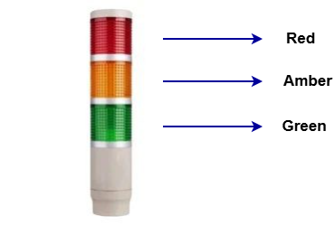

Safety Connection Overview
Stack Light Configuration
The Robot Cell fence is equipped with a stack light to indicate various states of the Bending Cell. Stack light outputs are controlled by the Press Brake controller based on the current state of the cell.

Red Light
-
Always ON - Machine in Emergency Stop/ Error State.
-
Blinking - Robot in T2 Mode.
Amber Light
-
Always ON - ROBOT In Manual Mode (T1).
-
Blinking Alternatively with RED - Robot in T2 Mode.
Green Light
-
Blinking - Robot in Auto mode and machine in ready state to start program.
-
Always ON - Robot Program running in Auto Mode.
Safety Fence
The Fanuc Robot cell is surrounded by a safety mesh fence equipped with safety switches at the doors. These safety switches are wired to the Emergency stop circuit board of the Robot controller.
For more details refer "FANUC Robot series R-30iB/R-30iB Plus CONTROLLER MAINTENANCE MANUAL" .

Safety Fence Operation Configuration
Robot in Manual Mode
T1 Mode: In manual mode the fence safety switch feedback are ignored, Robot can be moved without closing the fence doors.
The Stack light turns Amber ON to indicate that robot is operated in manual mode. In this mode it is safe to enter the fence and operate because the robot speed is limited to 250 mm/sec.
T2 Mode: In T2 mode the fence safety switch feedback are ignored, Robot can be moved without closing the fence doors. In this mode it is unsafe to operate the robot when inside the cell.
The Stack light now blinks with alternating AMBER and RED lights to indicate that robot is in T2 mode and precaution is needed in order to operate the robot as robot can be moved in full speed in this mode.
Robot in Auto Mode
-
The Robot is not operatable in auto mode when either of the fence doors are open.
-
An error message pops up on the status section of the teach pendent depending upon the type of error.
-
The safety board expects both chains of the fence switch feedbacks to be ON for normal operation.
-
Error Code:
-
SRVO 266 FENCE1 status abnormal - Indicates that fence door 1 is open and 2 is closed. (Refer SOP manual to ack this error)
-
SRVO 267 FENCE2 status abnormal - Indicates that fence door 2 is open and 1 is closed. (Refer SOP manual to ack this error)
-
SRVO 004 FENCE Open - Indicates that both fence doors are open.
-
-
When both fence doors are closed and machine is in ready condition then stack light indicates Green light in blinking mode.
-
When the program is started and robot program is running stack light indicates Green light in always On mode.
-
When the fence door is opened during operation of the robot the robot motion is stopped, program is paused and the stack light turns Red.
Emergency Stop Configuration
Apart from the two emergency stop buttons (one on the teach pendent and one at the controller), the UOP - *IMSTP is configured to the Emergency stops present in the press brake machine via EtherCat.
When Emergency stop is activated in the machine the robot enters Immediate Stop mode. This *IMSTP signal is essential to operate the robot in any mode.
For Normal operation of robot IMSTP should be always HIGH, when the signal turns LOW when either of the emergency stops are activated in Press Brake then an error message is shown and robot gets into stop state where it is inoperatable untill *IMSTP is HIGH again.
When Emergency stop is activated the stack light indicates RED.